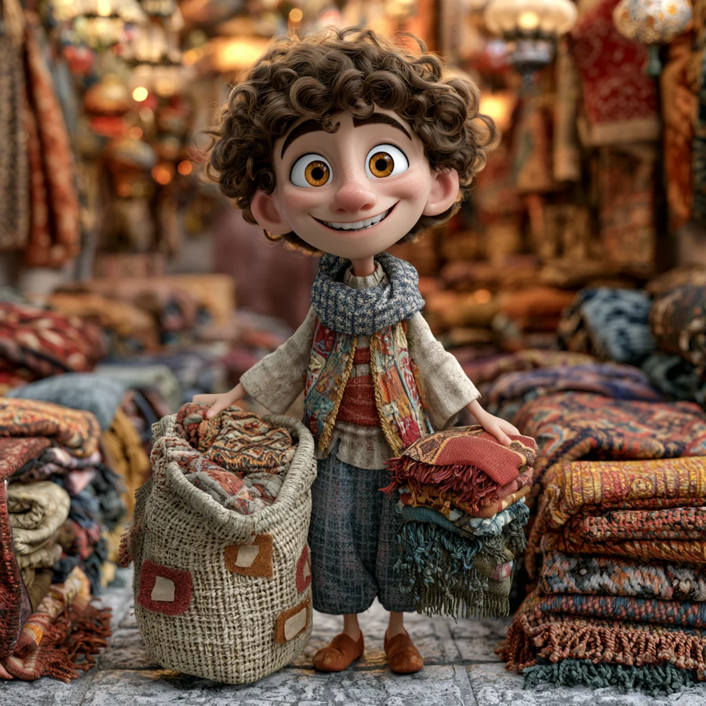
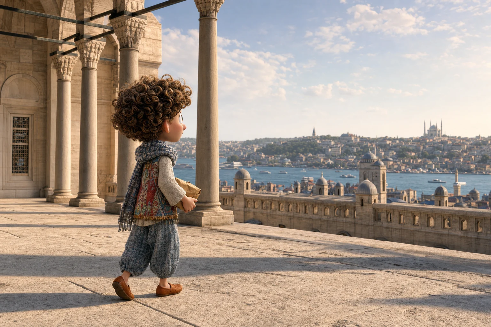
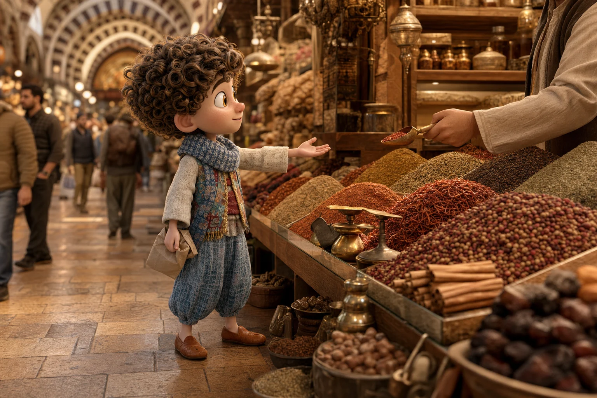
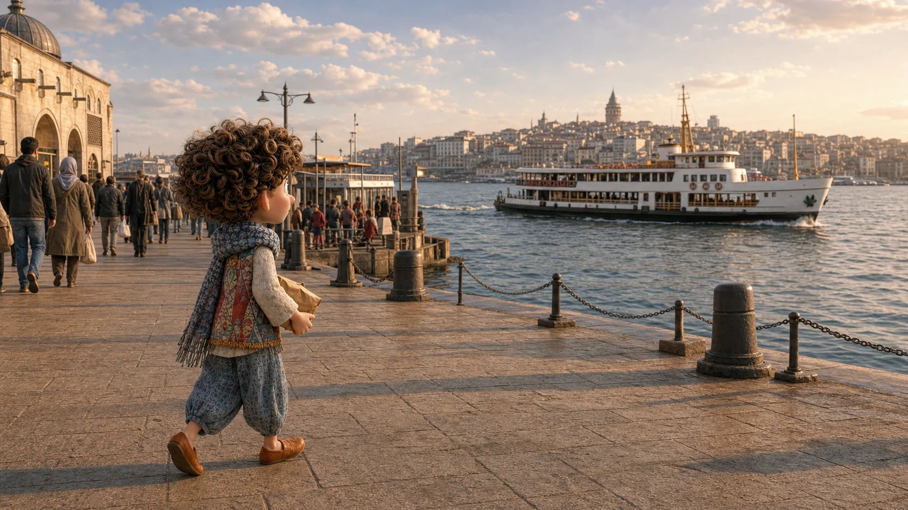

Jó munkát!
Szó szerint: menjen könnyen a munka.
Történet 03 · három megálló, aztán a víz
A bazárból nem lehet egyenes vonalban kijönni.
Nem baj. Köszönünk, kérdezünk, aztán az illatok után lesétálunk a vízig.
Gyere. Ha elvesztjük az irányt, majd találunk egy másikat.
Nagy Bazár · előbb kapcsolat, aztán portéka
Előbb köszönj. Az ár ráér.
Nem kell rögtön alkudnod. Egy rövid jókívánság már megmutatja, hogy az embert is látod a pult mögött.
Megnézhetem?
A kérdés nem kötelez vásárlásra.Mennyibe kerül ez?
Rámutathatsz arra, amiről kérdezel.Nem kell mindent hazavinned. Elég, ha már tudod, hogyan nézz meg valamit úgy, hogy közben nem siettet senki.

Ali nem siet tovább
Fentről végre látod, merre tartunk.
A kupolák mögött ott csillan a víz. Lent Eminönü vár, de előbb maradjunk itt egy percre.
„Üljünk le. Nem maradunk le semmiről.”Keressük meg az utat lefelé
Ha egy utcával lejjebb elveszne az irány
Most már azt is meg tudod kérdezni, merre menj.
Törökül így hangzik
Mısır Çarşısı nerede?
Hol van a Fűszerbazár?
Ha csak annyit értesz a válaszból, hogy „lefelé”, már jó irányban vagyunk.

A te választásod
Mi kerüljön a kis papírzacskóba?
Nem kell az egész pultot megtanulnod. Válassz egyet, mutass rá, és kérj belőle egy keveset.
Ezt mondhatod
Bundan biraz alabilir miyim?
Vigyük le a vízhez
Kaphatok ebből egy keveset?
Válassz egy fűszert. Ali addig megvár melletted.
Amit nem egy bevásárlószatyorban viszel haza
Öt mondattal eljutottál a bazártól a vízig.
Köszöntél, engedélyt kértél, árat kérdeztél, útbaigazítást kértél, végül pedig választottál.
Tedd el jól. A táskád estig biztosan őrzi az illatát.
Amit most már el tudsz intézni
A köszönéstől a vásárlásig már végig tudsz vinni egy piaci helyzetet.
A mondatok sorrendje maga az útvonal. Akkor vedd elő őket, amikor újra szükséged lesz rájuk.
Jó munkát!
Megnézhetem?
Mennyibe kerül ez?
Hol van a Fűszerbazár?
Kaphatok ebből egy keveset?
Ha választasz egy fűszert, Ali azt is megjegyzi erről a sétáról.
Az öt mondatot egy mozdulattal elteheted Ali zsebébe.
Vissza Ali várostérképéhez